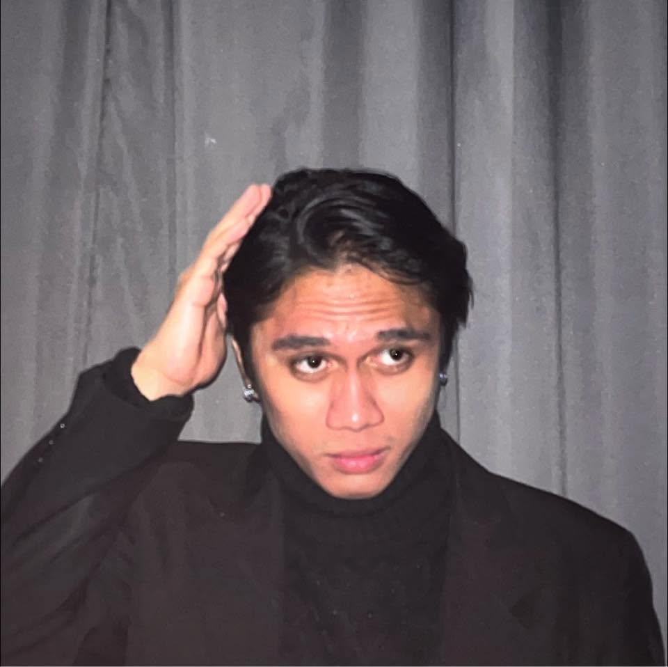
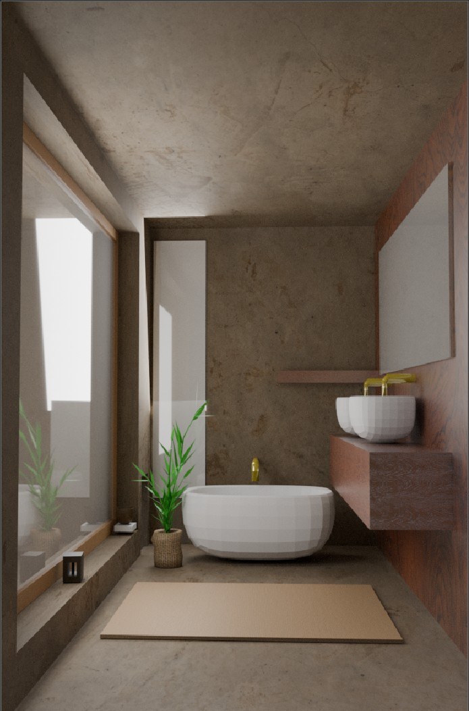
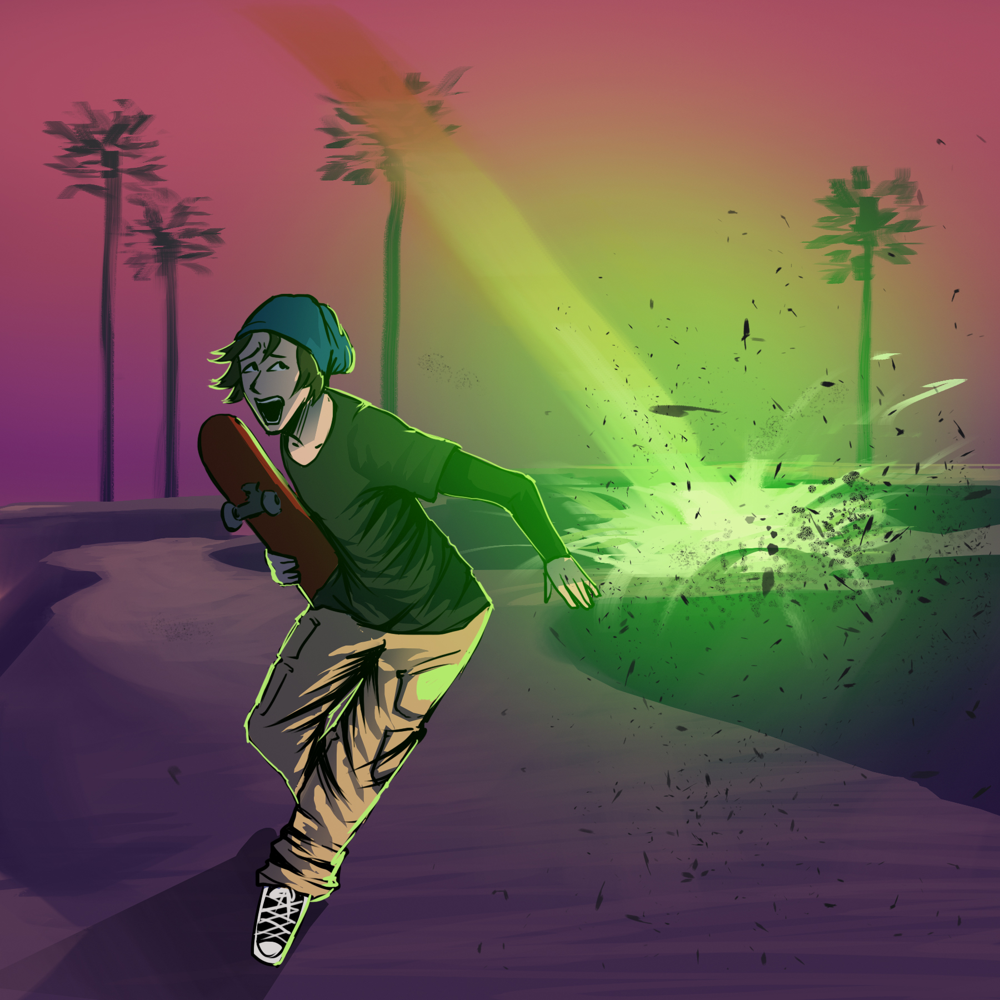

Digital illustration
Art, color, and visual detail
MULTIMEDIA STUDENT · CREATIVE
Hi, I'm John Mathew Bertos — a creative soul drawn to storytelling, bringing imagination to life through colors, motion, and digital artistry.

01 — A LITTLE ABOUT ME
I am a multimedia student passionate about creativity, digital media, and visual communication. With an early start in animation and art, I have developed skills in digital illustration, animation, editing, and other forms of digital art.
I enjoy exploring unique ideas, thinking outside the box, and turning concepts into visually engaging work.
Art, color, and visual detail
Motion, timing, and storytelling
Fresh ideas and open-minded problem solving
Built through school and customer service work
02 — SELECTED WORK
A peek into my creative process
and multimedia interests.
FILM / 2D ANIMATION
My film and animation work.

3D MODEL

3D MODEL
3D ANIMATION
3D ANIMATION

DIGITAL ART

DIGITAL ART

DIGITAL ART

DIGITAL ART

DIGITAL ART
Click images to view them larger. Videos can be played directly in the gallery.
03 — LET'S CONNECT
I'm always open to creative conversations, collaborations, and new opportunities.
mathewbertos@gmail.com ↗